Magic: the Gathering Card Design
View my current set here!
Version history
In thirteen years of playing Magic: The Gathering, I’ve loved it for different reasons: first for the wild art and mythic rares, then for the nights with friends, and eventually for the grind of local tournaments and MTG Arena. As I started making games of my own, I realized all of those reasons are supported by one thing: great systems design
Magic’s color pie is the clearest example. It carves the game’s mechanical space into five identities that support different player fantasies green for “big things,” blue for control and information, red for fast-paced volatility—while giving designers a structure to make cards, factions, and worlds that feel coherent. The same effect in blue and black tells different stories: in blue, drawing cards is curiosity; in black, it’s ambition with a cost. Put them together and you get Dimir, a faction of ruthless operatives whose mechanics and flavor point in the same direction.
That kind of emergent depth and alignment between mechanics and player fantasies is what I try to achieve in my own designs. Over the past seven years I’ve been designing my own custom Magic cards to understand why choices like the color pie work, and how to apply those lessons to new projects. Read more to see my journey with Magic card design and my most recent project, a custom set with over 540 mechanically unique Magic cards.
Version history
In thirteen years of playing Magic: The Gathering, I’ve loved it for different reasons: first for the wild art and mythic rares, then for the nights with friends, and eventually for the grind of local tournaments and MTG Arena. As I started making games of my own, I realized all of those reasons are supported by one thing: great systems design
Magic’s color pie is the clearest example. It carves the game’s mechanical space into five identities that support different player fantasies green for “big things,” blue for control and information, red for fast-paced volatility—while giving designers a structure to make cards, factions, and worlds that feel coherent. The same effect in blue and black tells different stories: in blue, drawing cards is curiosity; in black, it’s ambition with a cost. Put them together and you get Dimir, a faction of ruthless operatives whose mechanics and flavor point in the same direction.
That kind of emergent depth and alignment between mechanics and player fantasies is what I try to achieve in my own designs. Over the past seven years I’ve been designing my own custom Magic cards to understand why choices like the color pie work, and how to apply those lessons to new projects. Read more to see my journey with Magic card design and my most recent project, a custom set with over 540 mechanically unique Magic cards.

First Steps: Mechanical Identity
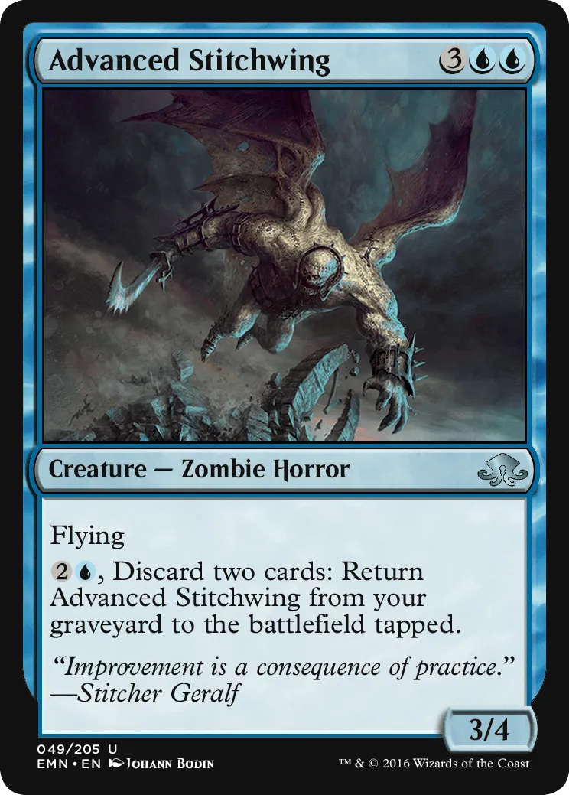
“Improvement is a consequence of practice.”
Seven years ago I tried to build my first custom Magic set. I’d been reading Mark Rosewater’s articles on card and set design, so I set myself the very ambitious target of ~300 cards and spent five months filling it out one card at a time.
The result looked fine on the surface. Each color had a creature group—white soldiers, blue wizards, black faeries, red goblins, green elves—and each did the “obvious” thing for that color: wizards drew cards, goblins multiplied, elves buffed each other. But when I playtested it, the same pattern appeared in every deck: pick a creature type, collect as many of it as possible, and win.
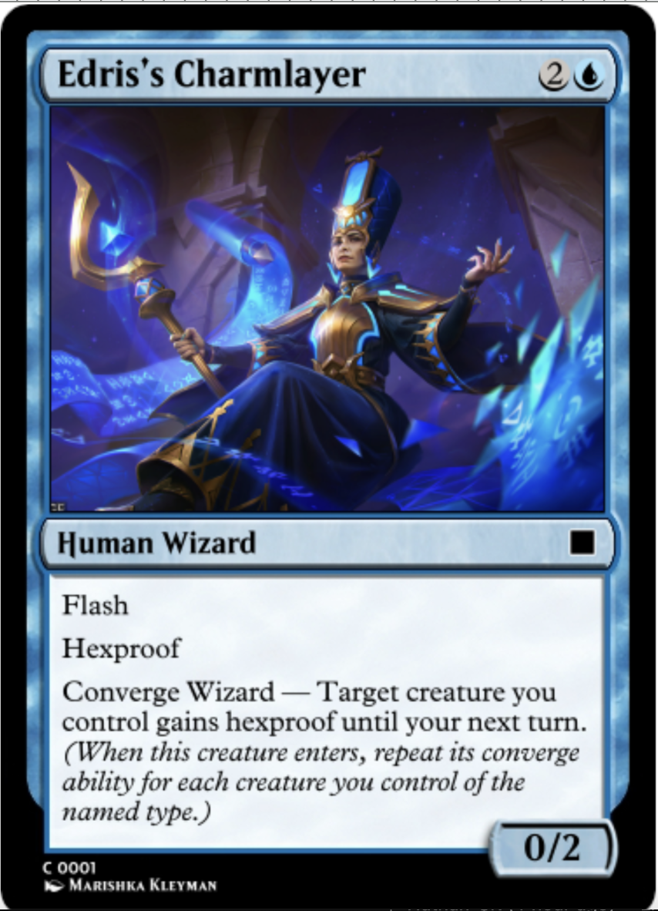
The converge mechanic rewarded players for amassing multiples of one creature type. It was shared by all five colors
In other words, I’d flattened Magic’s most flexible tool, the color pie, into five near-identical linear strategies and generic-feeling factions. That’s when it clicked for me that good game design is about making mechanics that talk to each other meaningfully. Like any tool, a great game mechanic or system is only as good as what one uses it to create.
You can see what I was trying to do in an official set like Bloomburrow. Its frog cards—e.g. Lilysplash Mentor and Pond Prophet—combine blue’s planning with green’s creature base to reward players not only for collecting more frogs, but for assembling a small engine of frogs that enhance each other. It’s a strong faction identity bolstered by compelling mechanics. That was missing from my set.
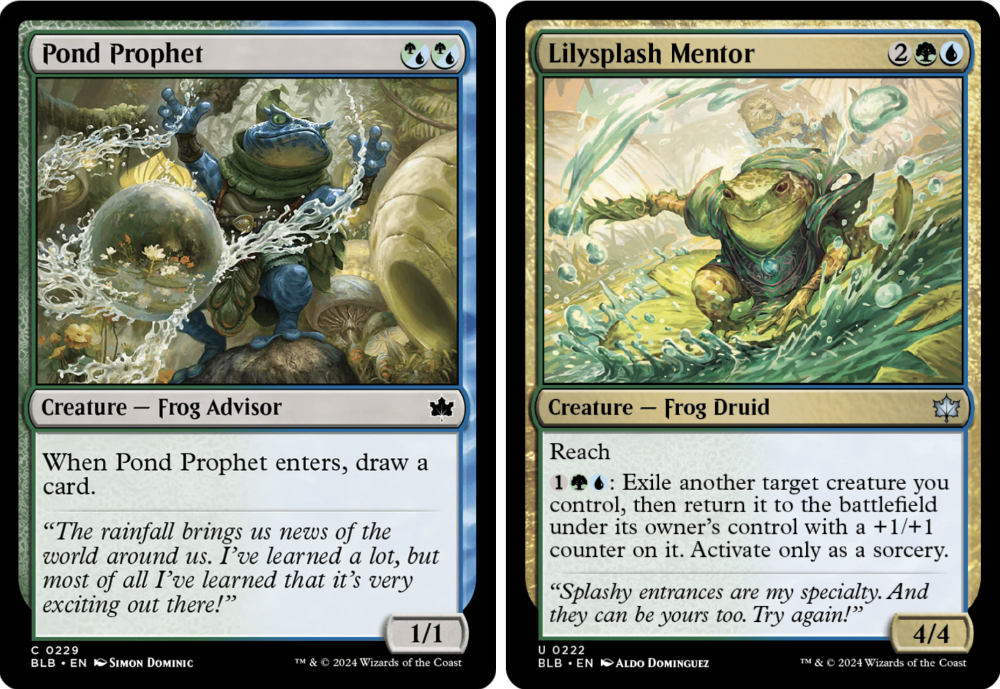
Pond Prophet and Lilysplash Mentor from Bloomburrow.
Going into my next set, I made a rule for myself: don’t just assign tribes to colors; give each archetype a distinct play pattern and at least one synergy hook that isn’t “play more of me.”
Part 2: Into the Deep End — A 540 Card Set
View this set here!
My second large Magic project is a 540-card cube — a custom draft environment where every card is effectively the same rarity. I started it about three years after finishing my first set, and in that time I’d gotten better at limited, better at balance, and had done enough other design work to know what I wanted to fix.
The biggest change was starting with archetypes. In my first set I mapped colors to single, linear tribes. This time I built around the 10 two-color pairs, the way many official sets do, because I’d seen how much more mechanical and narrative depth that structure gives.
The challenge was to make each archetype feel distinct but still share enough cards to draft smoothly. For example, I knew my red–black deck would be about sacrificing creatures for value, so I made red–green about generating lots of small creatures—which conveniently become sacrifice fodder. That meant red could contain cards that lived in both archetypes. I repeated that logic across the color pairs so every color could “point” in more than one direction.
I also chose a bottom-up approach to setting. Because this cube was meant to explore archetype structure more than worldbuilding, I let the mechanics lead. I finished the cards first and only later thought about flavor text and art.
Data-Driven Design
Unlike my first set (which lived in Google Docs and improvised printouts), this cube was built in Magic Set Editor from day one. MSE’s built-in charts let me track things like color balance, mana curve, removal density, and creature/spell ratios. That let me be scientific about changes: after a draft where players said “removal feels weak,” I could check the actual removal count and see whether it was truly low or whether we’d just had an odd draft. And when I buffed it, I could immediately see how that affected the overall makeup of the cube.
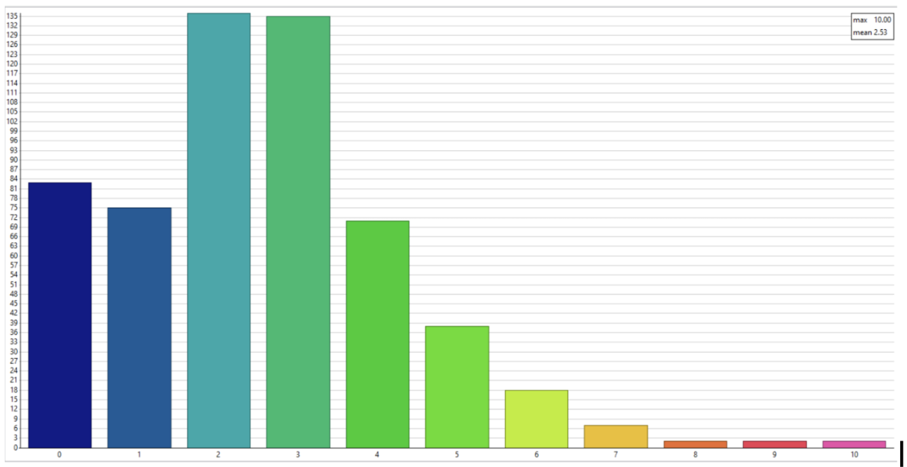
A chart showing the mana value (cost) of each card in the set.
X: Cost Y: # cards
X: Cost Y: # cards
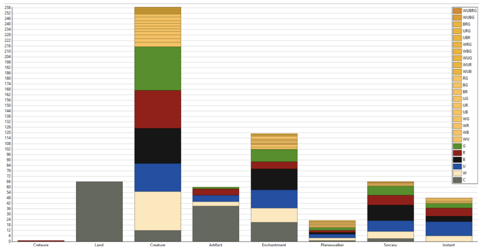
A chart showing the card type of each card in the set, broken down by color.
X: card type Y: # cards by color identity
X: card type Y: # cards by color identity
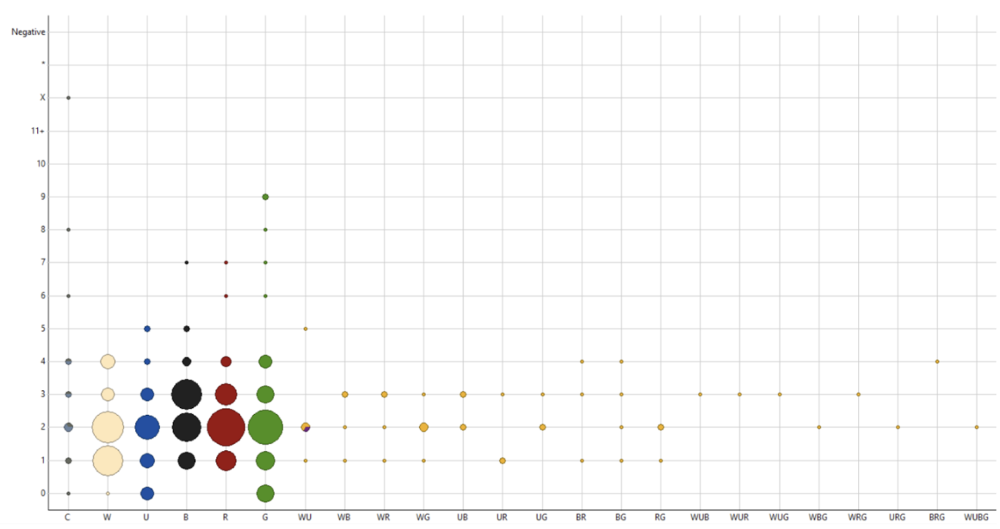
A chart showing the power of each creature in the set, broken down by color.
X: color identity Y: power
X: color identity Y: power
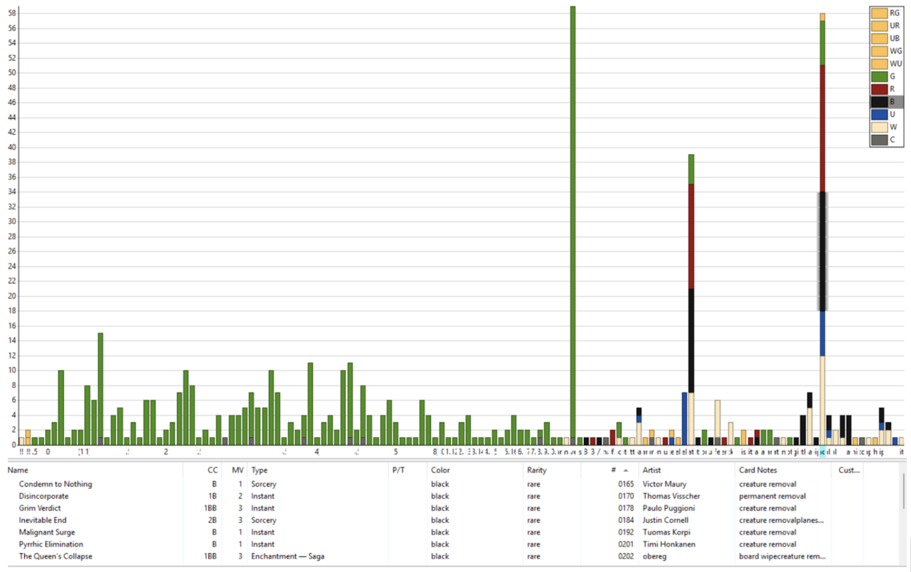
A chart showing aggregations of terms I added in the "notes" of cards. Here viewing cards marked as "removal".
X: note term Y: # cards
X: note term Y: # cards
For any game with a lot of moving parts, instrumentation is part of design—it keeps the set cohesive and facilitates iteration.
Playtesting
The biggest improvement in my second set—and honestly in my game design process overall—was committing to real playtesting and iteration. With my first custom set I ran a few events but never actually changed the cards based on what we saw. This time, with better tools and clearer goals, I built a loop I could repeat.
My playtesting approach has three parts:
1. Gather player feedback (feel first). Players love to suggest fixes, but I start by asking about their experience: “How did it feel when this happened?”, “Was that win satisfying or did it feel cheap?” Fun is the main metric, and feelings tell me faster than card-by-card suggestions where the fun is hiding. 2. Collect hard data. Balance problems kill fun fast—a single dominant card, or an archetype that never quite gets there leads players to feel bad. I track which archetypes are actually being drafted, which cards overperform or underperform, and I log every change so I can see whether a problem is real or just variance. 3. Limit variables per iteration. Each round I only adjust one slice of the environment— e.g. burn/removal density, green creature stats, or blue counterspells—so I can tell what caused the change. That keeps the data interpretable.
Over three years I’ve run close to fifty playtest sessions this way, leading to hundreds of small iterations. The biggest thing it taught me is that games don’t start balanced—and they often don’t even start fun. They become fun through testing, feedback, and disciplined changes.
State of the Game
As of today, nearly four years after starting work on my current set, I can say with confidence that it’s fun and fully playable. I still tinker with it often, but I’m long past sweeping changes. It has come a long way since the early days. Over time, I’ve loosened the archetypes in favor of more general synergy-building. Inspired by commander, a popular Magic format, I allow players to choose one card around which to build their decks. I have created an environment where every draft feels unique and every card can be useful in multiple contexts.
Below are some miscellaneous lessons I’ve learned while working on this project.
Miscellaneous Thoughts
Depth can come from simplicity.
Over time, I’ve come to value simple cards that create interesting gameplay, often through synergies with other cards.
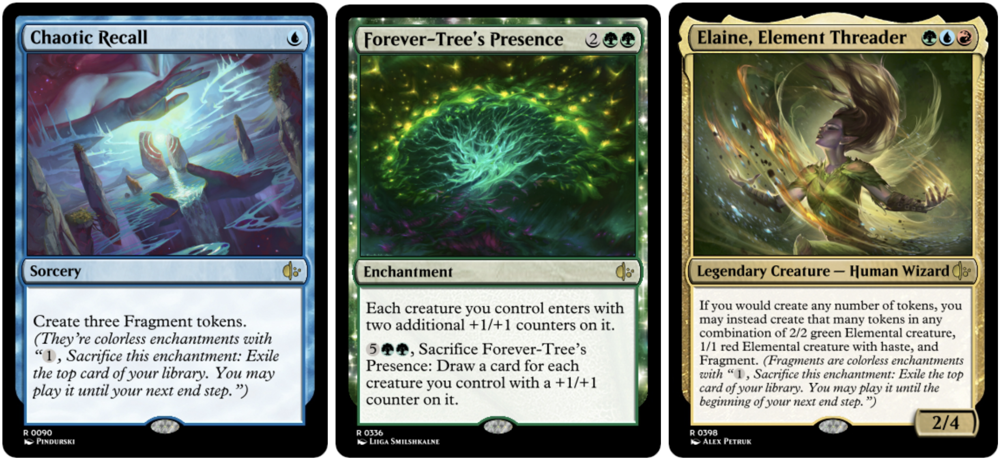
With Elaine and Forever-Tree’s Presence, you can turn this one mana spell into three 4/4 creatures—a great deal!
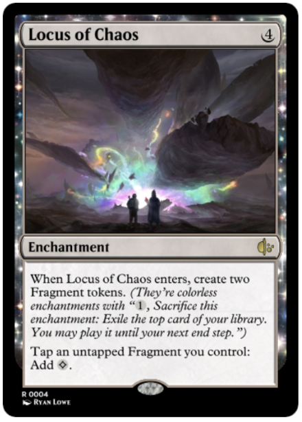
Or combine it with Locus of Chaos to generate lots of mana!
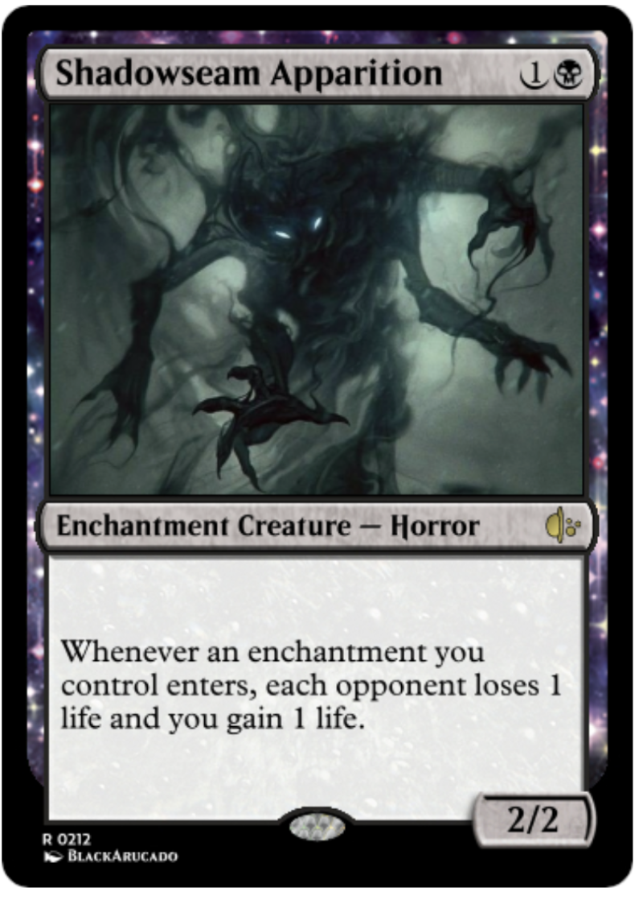
…or shadowseam apparition to gain life and drain your opponent’s.
Mechanics > narrative (when they clash).
Even the best narrative can’t save a game that feels bad to play. In early iterations of my set, I included a “devoid” keyword on many creatures purely because I felt it was flavorful. I failed to consider the mechanical problems: the accompanying “clear” frame obscured card color; it shadowed the real synergy, which was with the Reflection creature type (which all devoid creatures shared); and it took up valuable text space, making cards harder to read. I ended up changing devoid creatures into enchantment creatures, and created an enchantments archetype—tightening my mechanics and narrative feel all at once.
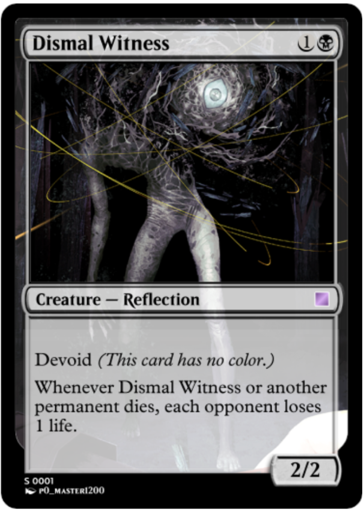
Bad balance can ruin fun—but so can overbalance.
It feels good to be powerful, and letting players feel overpowered is often a good way to create fun. With that in mind, I design some cards to be intentionally flashy and exciting, sometimes at the expense of perfect balance. In addition to the examples below, refer back to the Chaotic Recall/Elaine/Forever-Tree’s Presence synergy. One mana for three 4/4s might be considered quite unbalanced, but I want players to feel rewarded for assembling combos like that in my environment.
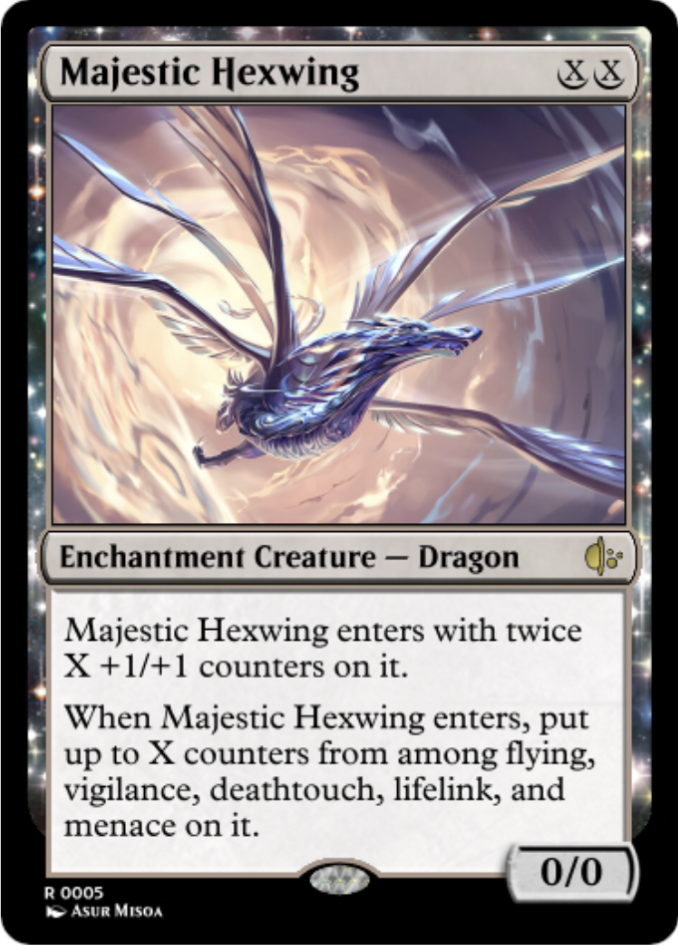
This thing is probably a bit too efficient and versatile, but it’s super fun to play with and not too miserable to play against.
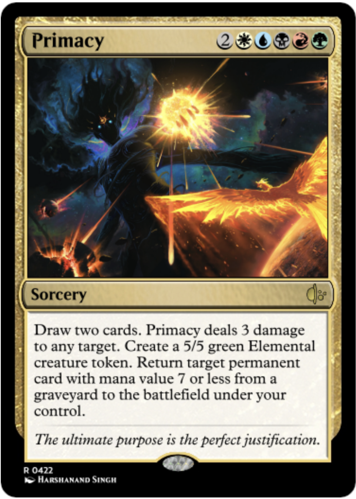
If you can cast this, you’ll probably win the game—but it’s meant to reward unlocking all five colors of mana, which is no mean feat!